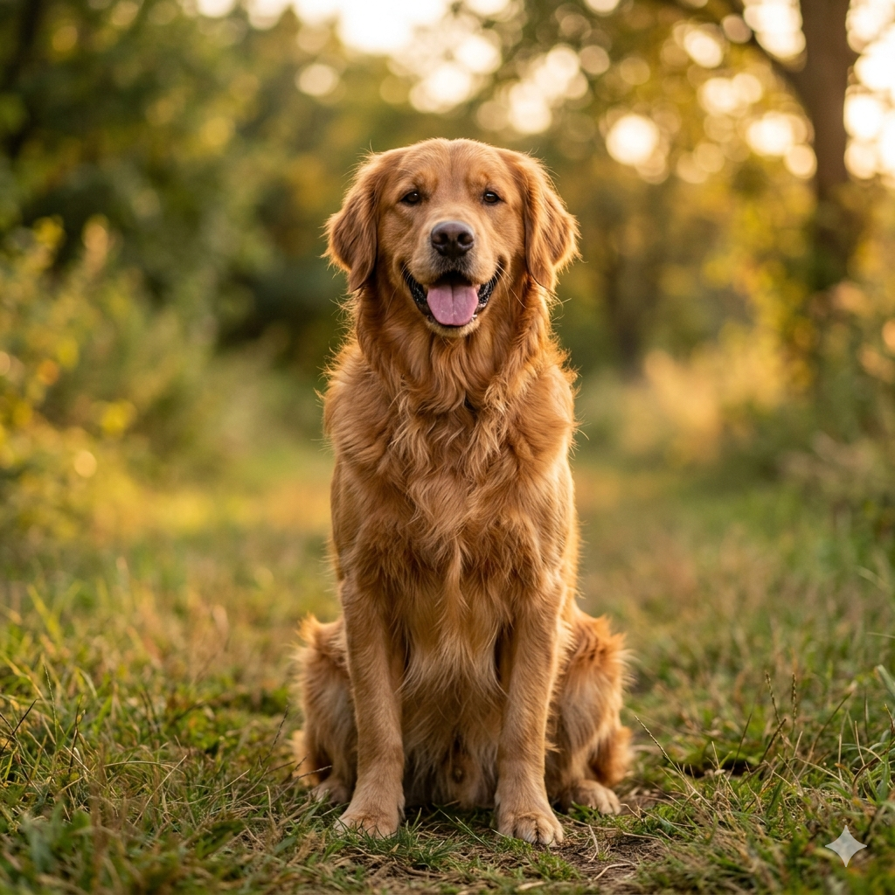
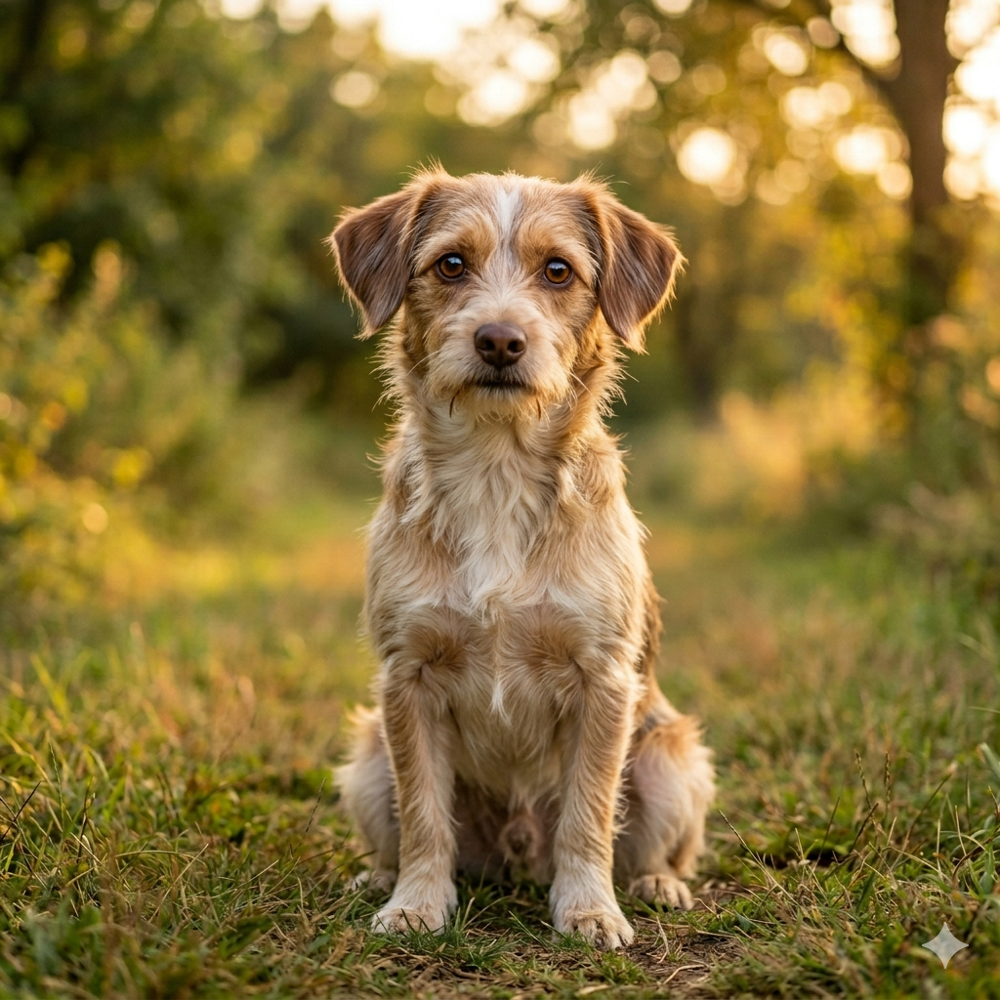
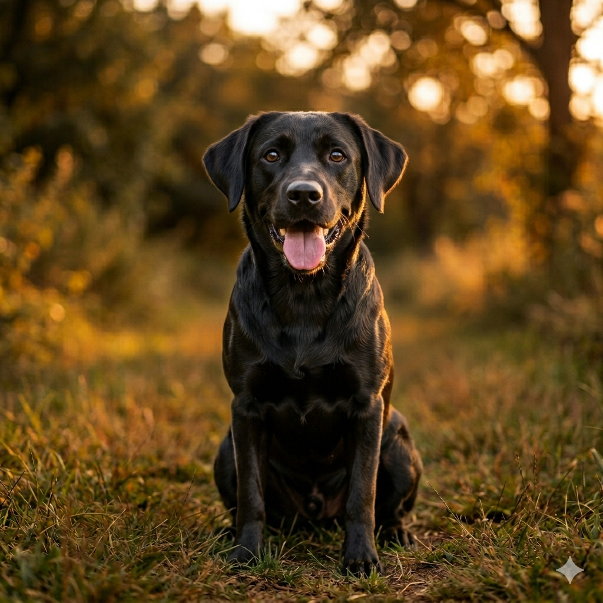
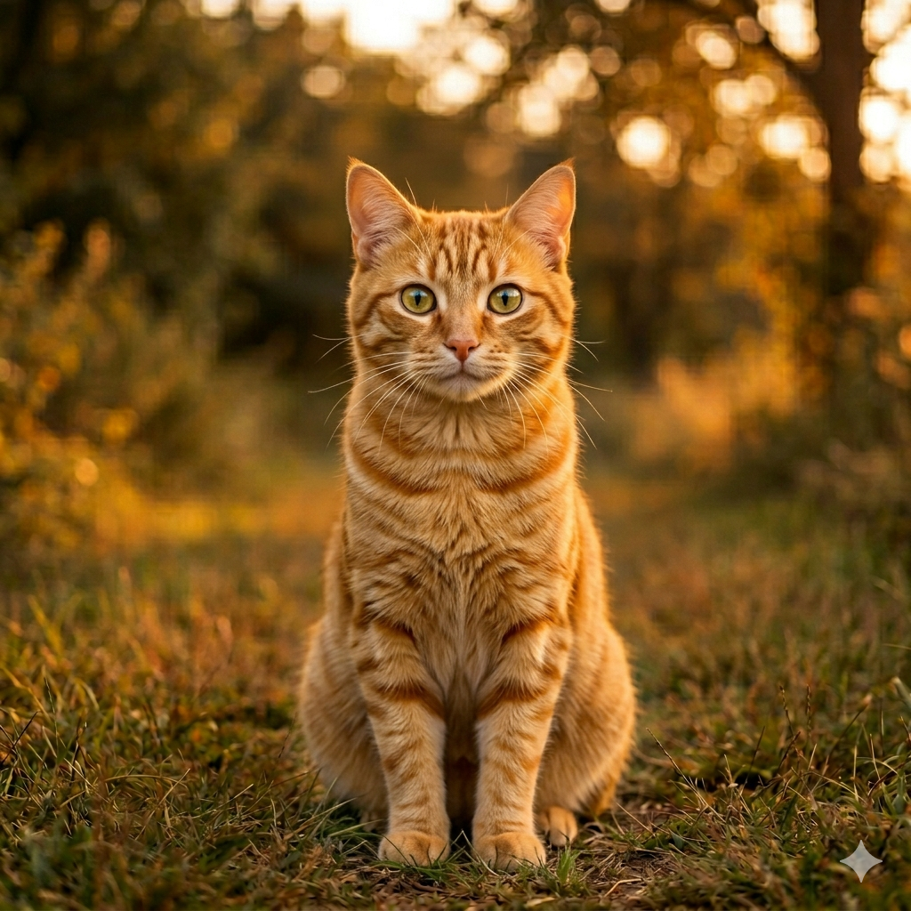
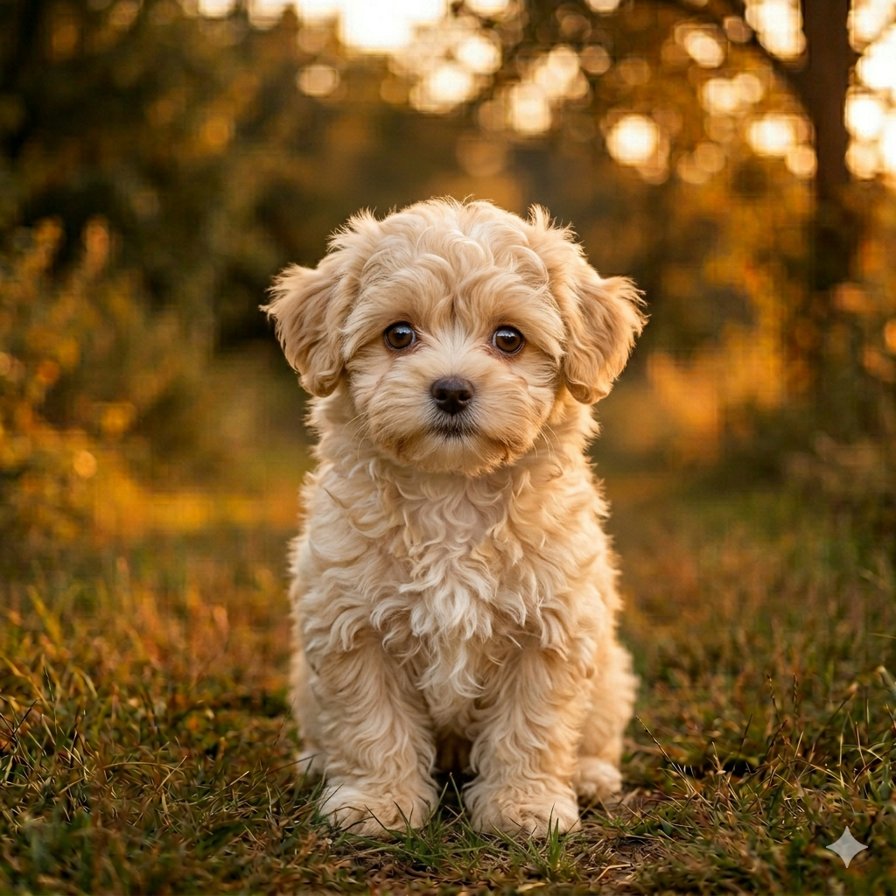
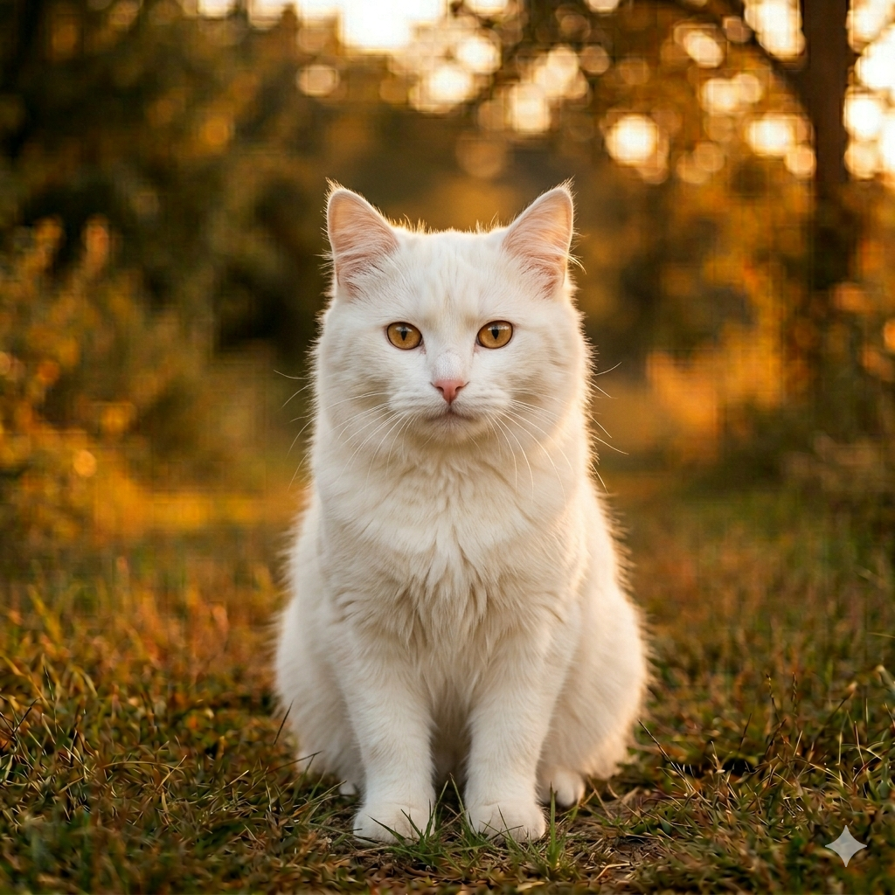
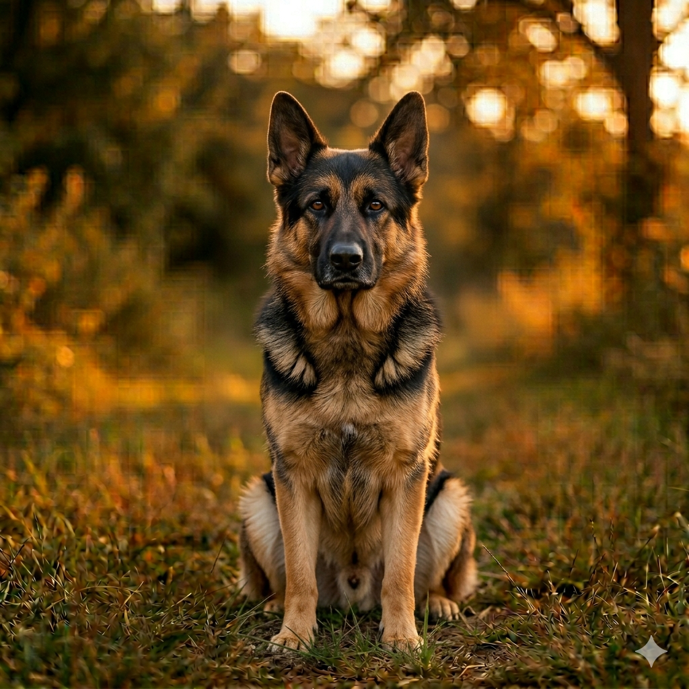
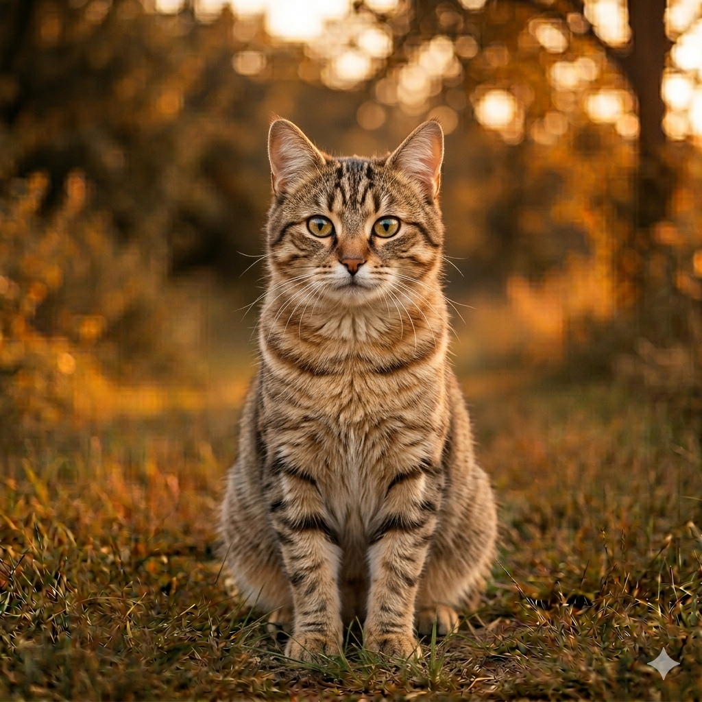

Rescatando vidas con amor 🐾
Rescatando vidas con amor 🐾

Nuestros voluntarios en acción ❤️

Historias de adopción que inspiran 🏠

Atención veterinaria con dedicación 🩺

Cada gatito merece un hogar 🐱

Unidos por los animales 🌟

Felices y libres gracias a ti 🌈

Somos una fundación sin ánimo de lucro comprometida con el bienestar animal. Desde 2015 trabajamos incansablemente para rescatar animales en situación de calle, brindarles atención veterinaria y encontrarles una familia amorosa.
Creemos que cada animal merece una segunda oportunidad y trabajamos cada día para hacerlo posible.
Rescatar, rehabilitar y reubicar animales en situación de vulnerabilidad, promoviendo la adopción responsable y la educación sobre el bienestar animal en nuestra comunidad.
Ser la fundación de referencia en rescate animal de la región, construyendo una comunidad consciente donde ningún animal sufra el abandono ni el maltrato.
Amor, respeto, responsabilidad y compromiso guían cada una de nuestras acciones hacia los animales y hacia las familias que confían en nosotros.

Golden Retriever
3 años
Talla grande
Disponible
Mestiza
2 años
Talla pequeña
Disponible
Labrador Negro
4 años
Talla grande
Adoptado
Gato naranja
1 año
Talla mediana
Disponible
Mestiza pequeña
2 años
Talla pequeña
Disponible
Gata blanca
3 años
Talla mediana
Adoptado
Pastor Alemán
5 años
Talla grande
Disponible
Gata atigrada
2 años
Talla mediana
Disponible"Adoptar a Luna fue la mejor decisión de nuestra vida. El proceso fue muy fácil y el equipo de Patitas Felices nos acompañó en todo momento."
— María García, adoptante 2023"Como voluntario llevo 2 años con la fundación. Ver cómo los animales encuentran hogar es una experiencia que no cambiaría por nada."
— Carlos Rodríguez, voluntario"Max llegó a nosotros asustado y triste. Hoy es el rey de la casa. Gracias a Patitas Felices por el trabajo que hacen."
— Ana Martínez, adoptante 2024